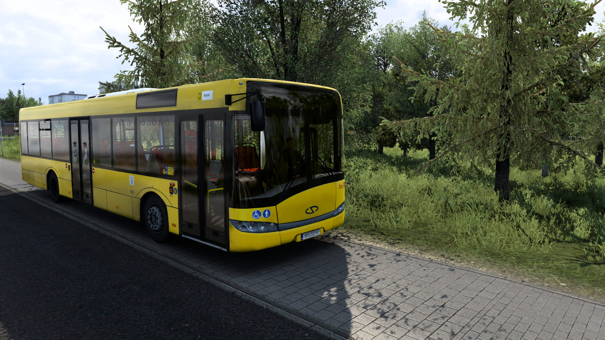

Modyfikacja wspiera dodatek DBus World, który umożliwia wykonywanie kursów autobusem z rozkładem jazdy.
Do działania dodatku na linie autobusowe wymagany jest DBus World Client dostępny tutaj.
Instalacja: Pobrany plik przenieś do (...)\Dokumenty\DBus Client\lines
Rozkłady jazdy działają tylko na najnowszą wersję modyfikacji!
Aktualizowane na podstawie: mzk.koszalin.pl

 S6 Addon 2
S6 Addon 2